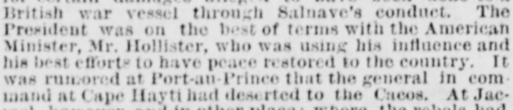
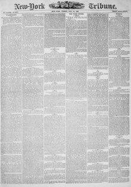

President was on the best of terms with the American MinisterEl Presidente estaba en los mejores términos con el Ministro estadounidense
New-York Tribune. New York [N.Y.], July 24, 1868. Page 1. View the originalVer el original


See the full pageVer la página completaAccording to the New-York Tribune of July 24, 1868, the president was on excellent terms with American Minister Mr. Hollister, who was working to restore peace, while rumors circulated that the general in command at Cape Hayti had deserted to the Cacos. The newspaper also reported on various domestic conflicts and military movements, including the arrest of a senator named Iomean at Aux Cayes for alleged complicity with rebels, and historical background regarding Geffrard, British Consul General Mr. Spencer St. John, and the bombardment of fortifications by the steamer Bulldog.Según el New-York Tribune del 24 de julio de 1868, el mandatario mantenía óptimas relaciones con el ministro estadounidense, el Sr. Hollister, quien gestionaba el restablecimiento de la paz, al tiempo que corrían rumores de que el general al mando en Cabo Haitiano se había pasado a las filas de los cacos. El rotativo también dio cuenta de diversos choques intestinos y movimientos castrenses, incluida la detención en Aux Cayes de un senador llamado Iomean por supuesta complicidad con los facciosos, así como antecedentes históricos relativos a Geffrard, al cónsul general británico Spencer St. John y al cañoneo de fortificaciones por el vapor Bulldog.
FULL TEXT:TEXTO COMPLETO:
EXPECTED ATTACK ON PORT-AU-PRINCE.ESPERADO ATAQUE CONTRA PUERTO PRÍNCIPE.
ADVVICES FROM HAYTI.NOTICIAS DE HAITÍ.
Salnave Still Defending the Capital—The American Minister—The Cacos Approaching.Salnave sigue defendiendo la capital—El Ministro estadounidense—Los Cacos se acercan.
Advices from Port-au-Prince to the 10th ult. report that the revolutionary forces under Salnave's opponents were closing around the city.Noticias de Puerto Príncipe hasta el 10 del pasado informan que las fuerzas revolucionarias bajo los oponentes de Salnave se estaban cerrando alrededor de la ciudad.
The President was on the best of terms with the American Minister, Mr. Hollister, who was using his influence and his best efforts to have peace restored to the country. It was rumored at Port-au-Prince that the general in command at Cape Hayti had deserted to the Cacos.El Presidente estaba en los mejores términos con el Ministro estadounidense, Sr. Hollister, quien estaba usando su influencia y sus mejores esfuerzos para que se restaurara la paz en el país. Se rumoreaba en Puerto Príncipe que el general al mando en Cabo Haitiano había desertado hacia los Cacos.
General Baez, President of the Dominican Republic, had offered the bay and peninsula of Samana to the United States as security for a loan of $1,000,000, which he was anxious to obtain from our government.El general Báez, Presidente de la República Dominicana, había ofrecido la bahía y la península de Samaná a los Estados Unidos como garantía de un empréstito de $1,000,000, que estaba ansioso por obtener de nuestro gobierno.